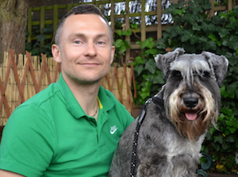

<!-- +++++ Welcome Section +++++ -->
<div id="ww">
    <div class="container">
		<div class="row">
			<div class="col-lg-8 col-lg-offset-2 centered">
				
				<h1>Hi I'm Peter</h1>
			</div><!-- /col-lg-8 -->
		</div><!-- /row -->
			<div class="col-lg-8 col-lg-offset-2">
				<p>I've been working as a software engineer since 1996. Over the last 18 years I've worked technologies. My favorites are probably VB, Delphi, C#, AngularJS and Xamarin.
				<p>What I love most about software development as a career is the pace of change. It requires that we continuously learn new skills and better ways of working. The environment we work in today is so different from only a few of years ago</p>
				<p>That’s why I want to stay in a technical role – I can’t imagine coming to work in a job that doesn’t change. When I’m sixty I hope I’ll still be banging out code with the youngest and brightest, reminiscing back to the days when we still used keyboards.</p>
				<p>Welcome to the blog. Please feel free to contribute.</p>
			</div><!-- /col-lg-8 -->
		</div><!-- /row -->
    </div> <!-- /container -->
</div><!-- /ww -->